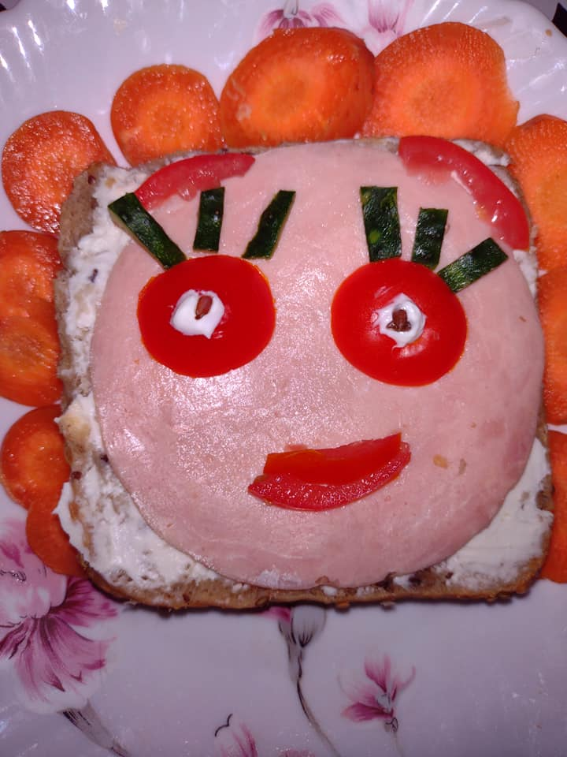
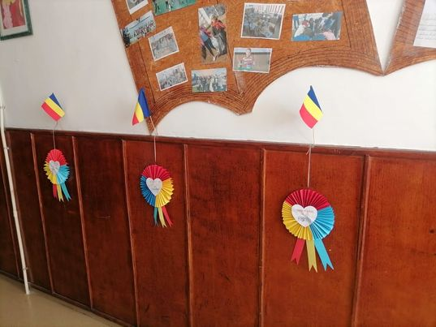

- Provenienţa materialelor
- Brânduşe din mărgele
- Copăcel din liţă şi margele
- Crini din hârtie creponată şi liţă
- Modele prezentate în expoziție
Provenienţa materialelor
Folosit încă din cele mai vechi timpuri,cuprul reprezintă un metal de culoare roşcată fiind un bun conducator de electricitate şi căldură.Liţa de cupru reprezintă partea componentă a unui cablu obişnuit (conducator de electricitate)ce se gaseşte în fiecare locuinţă.De aceea, pentru realizarea produselor noastre am folosit materialul provenit de la cabluri defecte, ce nu mai pot fi folosite (cablu de televizor, cablu de calculator). Din interiorul acestora am luat doar partea care ne interesa şi anume liţa de cupru.
Mărgelele le-am adunat de la mai multe coliere sau șiraguri de aceeași culoare, rupte sau care nu mai erau folosite.
Beţele de frigărui şi cutia de carton acoperită cu șervetel folosind tehnica şerveţelului.
Hârtie creponată, mult timp a fost folosită la împachetat, dar s-a descoperit că este un material care poate fi întrebuinţat în foarte multe moduri. Datorită structurii sale, hârtia creponată este un material ideal pentru confecţionarea de flori.
Brânduşe din mărgele
Pentru confecţionarea florilor vom avea nevoie de mărgele colorate, sârmă din cupru, tijă, hârtie creponată.Majoritatea florilor se confecţionează prin tehnica înşirării pe faţă.
Aceasta înseamnă că mărgelele vor fi înşirate pe faţă pe cele două capete ale sârmei pentru a forma un rând.
Înmulţind sau scăzând numărul mărgelelor se vor realiza diferite părţi ale florii.
Copăcelul din liţă şi mărgele
Pentru realizarea produsului asemenea imaginii alăturate am folosit materialele menționate anterior. Astfel, am modelat lița de cupru pe care am atașat mărgelele ce au fost lipite mai apoi pentru o mai mare rezistență.
Crini din hârtie creponată şi liţă
Se decupează 6 petale din hârtie creponată albă.Pe linia mediană a fiecărei petale se lipeşte liţă înfăşurată în hârtie creponată.
Pentru confecţionarea pistilului, se fac biluţe din hârtie creponată şi se aşază pe altă fâşie de hârtie şi se rulează.
Pentru confecţionarea staminelor, se înfăşoară liţă cu hârtie creponată, iar capetele se vopsesc în roşu sau portocaliu.
Se aranjează staminele în jurul pistilului, se poziţionează petalele trei câte trei şi se leagă cu sârmă. Locul legăturii cu sârmă se maschează cu o fâşie din hârtie creponată verde.
IATĂ CE POT FACE DOUĂ MâINI DIBACE!
Reciclăm și reutilizăm
Localitatea mea
Centrale electrice


Artă și creație
Alimentație sănătoasă - personaje hazlii


1 Decembrie
